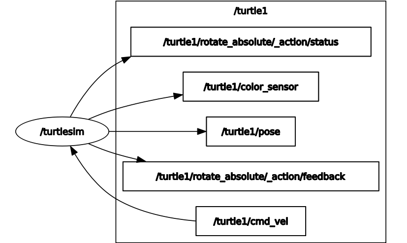

4.3. Basic ROS Nodes#
You are already familiar with ROS nodes from the Turtlesim exercises. Nodes are simply modular programs that can act on data, and pass information between each other. See the diagram on the Offical ROS2 Docs for a visual animation of information being passed between nodes.
In the Turtlesim exercise, you worked with two nodes: the turtlesim itself, and the teleop keyboard controller. In that system, the Turtlesim keeps track of all the turtles, and moves them according to data it recieves from the keyboard controller.

As you can see, teleop_turtle (the keyboard node) sends data to turtlesim about the speed that it wants turtle1 to move at (turtle1/cmd_vel).
Then, turtlesim sends data back about the status of rotate_absolute actions. Try it out now! Launch the turtlesim and turtle_teleop_key nodes, and monitor info passed between them with ros2 topic echo /turtle1/cmd_vel.
!ros2 run turtlesim turtlesim_node
Run this in a separate terminal, not in Jupyter! You will not be able to input keypresses.
ros2 run turtlesim turtle_teleop_key
!ros2 topic echo /turtle1/cmd_vel
# You may also want to run this in a separate terminal, so you can see all your latest output
4.3.1. #
4.3.2. Types of Connections#
As we saw in the node graph, nodes are connected together to show how they transfer information together. In this tutorial, we’ll be covering 3 types of connections.
Now that we know what nodes are and how they interact with each other, lets write our own!
4.3.3. Writing A Node#
To write ROS2 Nodes in python, we will be using the rclpy python library.
The first thing we need to do, as always, is enter our workspace and make a package.
# Initialize your workspace variables
workspace = '/home/ubuntu/learn_ros_ws'
%cd $workspace
package_name = 'basic_nodes'
%%bash --no-raise-error -s "$package_name"
cd src
# Create a package
ros2 pkg create --build-type ament_python $1 --node-name subscriber_node
Great! Now we have a package for you to work in. Let’s look at default the node it autofilled with, the orphan_node.
def main():
print('Hi from basic_nodes.')
if __name__ == '__main__':
main()
It’s just a main function with a print statement! Remember, each node is simply a program, and the ROS2 part is how it talks to other programs.
You can build and run this node with the following commands:
%%bash --no-raise-error
colcon build --packages-select basic_nodes
source install/local_setup.bash
ros2 run basic_nodes subscriber_node
Now that we have a basic node setup, lets make it take some information!
4.3.4. Subscribers#
A subscriber subscribes to a topic. Whenever data is sent over that topic, all subscribers who are listening will recieve the data. See the graphics on the official ROS2 docs for more info.
Let’s modify our basic node to subscribe to a topic. We’re going to make it so that whenever a string is sent to that topic, our base node will add an exclaimation point!
%%writefile src/basic_nodes/basic_nodes/subscriber_node.py
# Import everything we need: the rclpy library, rclpy nodes, and ros2 strings.
import rclpy
from rclpy.node import Node
from std_msgs.msg import String
class MySubscriber(Node):
def __init__(self):
super().__init__('subscriber_node')
self.create_subscription(String, 'boring_strings', self.subscriber_callback, 10)
def subscriber_callback(self, msg):
print(msg.data + '!')
def main(args=None):
rclpy.init(args=args)
subscriber = MySubscriber()
rclpy.spin(subscriber)
print('Hi from basic_nodes.')
if __name__ == '__main__':
main()
Notice how we used a callback function to subscribe to the function. Everytime we recieve some data, the callback function runs. Try running it! When we run the node, it won’t finish since its always listening for messages. Send a message in your terminal using the following command:
ros2 topic pub /boring_strings std_msgs/msg/String 'data: Hello, world' -1
Its general form is: ros2 topic pub <topic> <msg_type> <data> -1
The -1 means to publish once, instead of in a loop.
%%bash --no-raise-error
colcon build --packages-select basic_nodes
source install/local_setup.bash
ros2 run basic_nodes subscriber_node
You should see Hello, world printed every time you publish to the topic!
You can subscribe to a topic with multiple nodes at once. Let’s modify our subscriber_node to take a parameter.
%%writefile src/basic_nodes/basic_nodes/subscriber_node.py
# Import everything we need: the rclpy library, rclpy nodes, and ros2 strings.
import rclpy
from rclpy.node import Node
from std_msgs.msg import String
class MySubscriber(Node):
def __init__(self):
super().__init__('subscriber_node')
self.create_subscription(String, 'boring_strings', self.subscriber_callback, 10)
self.declare_parameter('punctuation', '.')
def subscriber_callback(self, msg):
print(msg.data + self.get_parameter_or('punctuation', '.').value)
def main(args=None):
rclpy.init(args=args)
subscriber = MySubscriber()
rclpy.spin(subscriber)
print('Hi from basic_nodes.')
if __name__ == '__main__':
main()
%%bash --no-raise-error
colcon build --packages-select basic_nodes
source install/local_setup.bash
ros2 run basic_nodes subscriber_node --ros-args -p punctuation:=\"\!\"
# We need to escape the exclaimation mark and its quotes; don't worry too much about the backslashes.
Try running a second node, with a question mark as punctuation instead! (Remember to surround it with escaped quotation marks.) Then, run the same command as earlier to send a message to the /boring_strings topic and see what happens at each node.
ros2 topic pub /boring_strings std_msgs/msg/String 'data: Hello, world' -1
4.3.5. Publishers#
If we had to sit around all day and type in messages to publish to our nodes, ROS wouldn’t be very useful. We can make a publisher node to do this for us!
Now, let’s create something to send messages. Create a new file in your basic_nodes package, and put in similar code to the basic_node. Call it publisher_node.py, and put the following code into it:
# Import everything we need: the rclpy library, rclpy nodes, and ros2 strings.
import rclpy
from rclpy.node import Node
from std_msgs.msg import String
class MyPublisher(Node):
def __init__(self):
super().__init__('publisher_node')
self.my_publisher = self.create_publisher(String, 'boring_strings', 10)
self.create_timer(0.5, self.timer_callback)
def timer_callback(self):
msg = String()
msg.data = "Hello, world"
self.my_publisher.publish(msg)
def main(args=None):
print('Starting publisher node...')
rclpy.init(args=args)
publisher = MyPublisher()
rclpy.spin(publisher)
if __name__ == '__main__':
main()
Every time we add a new node, we also need to tell ROS2 that it exists and how to start it! We can do that by adding it to the setup.py file
%%writefile src/basic_nodes/setup.py
from setuptools import find_packages, setup
package_name = 'basic_nodes'
setup(
name=package_name,
version='0.0.0',
packages=find_packages(exclude=['test']),
data_files=[
('share/ament_index/resource_index/packages',
['resource/' + package_name]),
('share/' + package_name, ['package.xml']),
],
install_requires=['setuptools'],
zip_safe=True,
maintainer='root',
maintainer_email='your_email_here@example.com',
description='TODO: Package description',
license='TODO: License declaration',
tests_require=['pytest'],
entry_points={
'console_scripts': [
'subscriber_node = basic_nodes.subscriber_node:main',
'publisher_node = basic_nodes.publisher_node:main' # This line! Don't forget the comma.
],
},
)
And run it…
%%bash --no-raise-error
colcon build --packages-select basic_nodes
source install/local_setup.bash
ros2 run basic_nodes publisher_node
Now, in another terminal, listen to your publisher node using:
ros2 topic echo /boring_strings
Where /boring_strings is the topic you want to “echo,” or print into the terminal.
You should see your data being printed!
Then, instead of echoing the topic, you can run your subscriber node. Run the command from before to start your subscriber node:
ros2 run basic_nodes subscriber_node --ros-args -p punctuation:=\"\!\"
4.3.6. Activity#
Now that you can write scripts using topics, we can write to the same topics that turtlesim uses to control a turtle automatically!
The goal of this activity will be to move the turtle back and forth from one end of the screen to the other. TODO add gif showing that
By running rqt, we can see the topics that are part of turtle1.

Specifically, we are interested in /turtle1/cmd_vel and /turtle1/pose. We can control the turtle by publishing to cmd_vel and get information about by subscribing to pose.
Let’s make a new package to work in:
# Initialize your workspace variables
workspace = '/home/ubuntu/learn_ros_ws'
%cd $workspace
package_name = 'learn_ros_activities'
%%bash --no-raise-error -s "$package_name"
cd src
# Create a package
ros2 pkg create --build-type ament_python $1
And here’s a template for a node with both a subscriber and a publisher.
import rclpy
from rclpy.node import Node
from geometry_msgs.msg import Twist
from turtlesim.msg import Pose
class RightLeftNode(Node):
def __init__(self):
super().__init__('right_left_node')
self.x_position = 0.0 # Set this in the pose_callback. Make sure it's a float by
# adding the decimal point, otherwise you'll run into type errors.
self.going_right = False # Use this for your velocity logic
# Edit this line: What topic do you want to subscribe to?
self.pose_subscriber = self.create_subscription(Pose, '/turtle1/topic_to_subscribe_to', self.pose_callback, 10)
# Edit this line: What topic do you want to publish to?
self.velocity_publisher = self.create_publisher(Twist, '/turtle1/topic_to_publish_to', 10)
self.create_timer(1, self.publish_velocity)
def pose_callback(self, msg: Pose):
# The type of `msg` is a turtlesim Pose. To get the x position of pose, do:
# `msg.x` Store it into self.x_position.
pass # your code here
def publish_velocity(self):
# cmdvel accepts a Twist: A message with both a linear and angular component.
# For this activity, we only care about linear motion in the x axis.
# You can set that like: `msg.linear.x = 1`
msg = Twist()
# Put your logic here. How can you access the current position of the turtle?
# Switch to going right (bigger x) when x is less than 1, and switch to going
# left (smaller x) when x is greater than 10
pass
# publish your node
pass
def main(args=None):
print('Starting right-left node...')
rclpy.init(args=args)
publisher = RightLeftNode()
rclpy.spin(publisher)
if __name__ == '__main__':
main()
Fill out the template! When you’re done, run turtlesim_node and your rightleft node.
Don’t forget to add an entry point to your setup.py!
# ...
entry_points={
'console_scripts': [
'right_left_node = learn_ros_activities.rightleft_node:main',
],
},
%%bash --no-raise-error -s "$package_name"
colcon build --packages-select $1
source install/local_setup.bash
ros2 run learn_ros_activities right_left_node & ros2 run turtlesim turtlesim_node